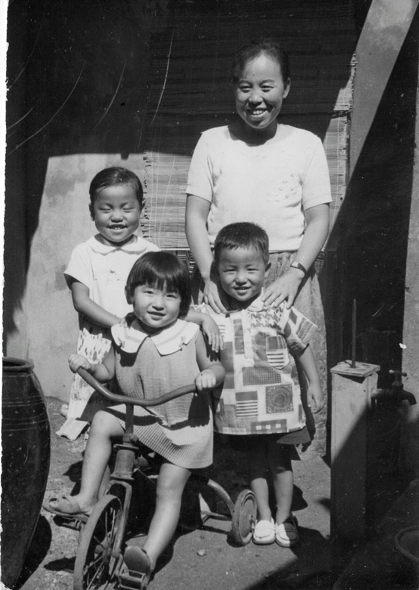
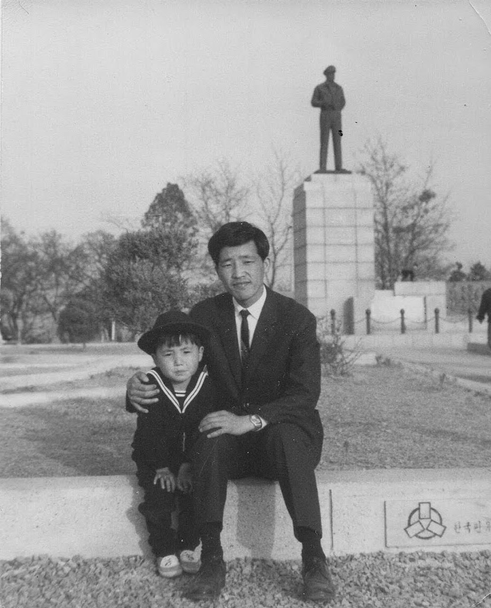

At work, we often discuss MVP or Minimally Viable Product,
“The version of a new product which allows a team to collect the maximum amount of validated learning about customers with the least effort.”1
My parents lived a version of MVP as it applies to life,
“The simplest version of a meaningful life that meets your essential needs with clarity, purpose, and sustainability—without excess.”
- AI Assistant (ChatGPT Plus)
The lives in Korea for my parents and nearly all Koreans, after the Korean War, meant survival,
There were no options for them.
Now I am beginning to live my life, in a similar manner, one that I used to question.
One of the earliest memories is walking to 화랑교회
Like many childhood recollections, it was dark, cold and cries of wild animals was representative of the post-war Korea
Photos from those days were captured in black and white.
It may as well have been a life devoid of colors or conveniences.
For the first 6 years of my life, we lived in a home that had no Television, Telephone or in-house plumbing.
When we moved from 부평 to 주안, we got the running water, a black rotary phone (one-digit for the station, and 4 individually assigned number), and a black and white TV that pulled in all three major TV (MBC, TBC, and KBS) stations2 and the forerunner to AFKN broadcasting3
We were considered an early adopter family.
Nearly everyone in the family, and the majority of the Korean population, belonged to a Christian congregation.
Prevailing denomination at the time in Korea was Presbyterian group.
Growing up I thought 장로교회 was the major branch of Chrisitianity.
I attended the church, not because I understood the doctrine, but because it was the family tradition.
I did look forward to the Easter and the Christmas.
Some kind of treat was handed out and any kind of food or sweets tasted good and were treasured.
I don’t recall what we ate growing up.
I do remember, on special occasions, holidays and the big family gatherings, Mom would purchase a small fraction of 근 (600 grams) of pork to be added to the soup.
A positive development during those years was the crate of apples.
Apple Crate Days
I was called 사과대장 or Apple Captain because I would eat every bit of apple down to very core.
Not sure if that was because I liked the fruit or to avoid hunger.
Anyhow, the nickname stuck.
When my father went to Vietnam to work, the family could afford a few more basics things in life.
In one of his letters home, he told my mother to purchase a crate of apples for me to eat.
I could have an apple on demand.
We kept the box under an old desk and I would reach into the box and search for the apple among the rice husk that was used as the packaging material.
I had won the lottery, I felt like we were the richest family in the region.

My life in 부평/주안 area of Incheon contained within 30 square miles or an area circumscribed by a 5km radius.
We walked everywhere and if lucky, we hopped on one of the local buses.
Seoul was about 10 miles away but we wouldn’t travel there unless we were visiting family members. One exception was a visit to 동물원 (動物園).
A Trip to 김해
My dad’s youngest sibling, who was 13 years younger, lived with us. My mom and he made a pact.
As long as he passed the entrance exams, my parents would fund his education.
However, my parents ran into a difficult stretch financially. My mom suggested he take a break from study and volunteer for a military.
(military service in those days were not mandatory)
Understanding the family situation, my uncle volunteered.
Either due to his exam taking skills or propensity for studying, he earned a family visit credit.
At the time he was stationed at 김해공명학교, performing civil engineering duties within the military.
The distance from 인천 to 김해 is about 500 km.
I imagine trains in those days traveled about 50km per hour. But I remember my mother and I visited the youngest brother of my father.
During his military service, the service rendered because of financial struggles.

Now I live in an era where I am reminded what Maximally Achievable Life looks like and ways I can achieve it.
I am grateful that life’s essentials are granted by virtue of being a citizen of developed nations of the world.
That the freedom of expression is not limited,
Congress shall make no law respecting an establishment of religion, or prohibiting the free exercise thereof; or abridging the freedom of speech, or of the press; or the right of the people peaceably to assemble, and to petition the Government for a redress of grievances.
A gratitude to my parents for demonstrating how to live in a times of plenty and of famine.
God-centered, frugal, family-centered life.
- Memorial Day, 2025

Footnotes
https://www.atlassian.com/agile/product-management/minimum-viable-product#:~:text=The%20concept%20of%20the%20minimum,customers%20with%20the%20least%20effort.%E2%80%9D↩︎
see, Origin Section of https://www.britannica.com/art/Korean-drama↩︎
https://en.wikipedia.org/wiki/American_Forces_Network#:\~:text=AFKN%20began%20TV%20operations%20on,aired%20on%204%20January%201959.↩︎